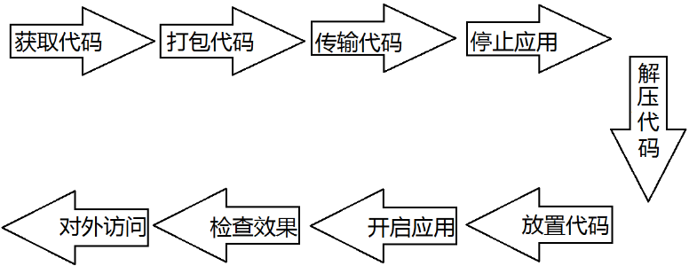
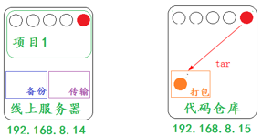
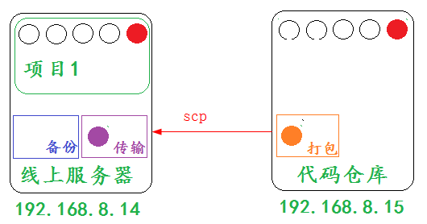
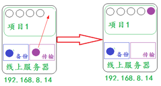

第 5 章 代码发布
学习目标：
- 掌握代码发布流程
- 掌握代码发布各子流程的技术关键点
5.2.1 流程简介
部署流程：

5.2.2 流程详解
部署场景：
两台主机做部署动作

注意：
部署的文件就是两台主机右上角的红色内容
1.获取代码
代码仓库
集中式的： svn
分布式的： git
区别：
svn的几乎所有操作命令，都集中在我和代码仓库服务器处于网络连接状态。
git的几乎所有操作命令，可以在本地完成，和代码仓库服务器是否连接无关。
公司的代码仓库：
私有仓库 gitlab
内部服务器或者公网服务器
仓库权限
只有项目的开发人员才有权限，项目之外的人没有权限
代码权限：
开发、管理、查看
2.打包代码
场景演示：

目的：
减少传输文件数量
减小传输文件大小
增强传输速率
常见打包方式：
windows:
zip、rar...
linux：
tar、zip...
3. 传输代码
场景演示：

传输方式：
有网情况下
多种方式：git、ftp、scp、共享挂载 cp、rsync
没有网情况下
物理方式： U盘或者硬盘
4. 关闭应用
代码所在的服务用到了什么应用，就关闭什么应用
关闭的顺序：先关闭外网能访问的（离客户近的），后关闭外网不能访问的（离客户远的）
5. 解压代码：
tar xf
6. 放置代码
为了避免我们在放置代码过程中，对老文件造成影响，所以我们放置代码一般分为两步：备份老文件和放置新文件。
备份原文件

放置新文件

注意：
两个文件的名称是一样的，只是内容不同
对整个应用项目来说，两个文件没有区别
7. 开启应用
刚才关闭了什么应用就开启什么应用
开启的顺序：先开启外网不能访问的（离客户远的），后开启外网能访问的（离客户近的）
8. 检查
查看浏览器效果或者netstat -tnulp查看系统开放的端口
5.2.3 技术关键点
文件的压缩和解压
文件的压缩
压缩格式：tar zcvf 压缩后的文件名 将要压缩的文件
文件的解压
解压格式：tar xf 压缩后的文件名
命令参数详解
| 参数 | 作用 |
|---|---|
| z | 指定压缩文件的格式为 tar.gz |
| c | 压缩 |
| v | 显示详细过程 |
| f | 指定压缩文件 |
| x | 解压 |
查看压缩文件内容
zcat 压缩文件
文件的传输
scp传输工具：
命令格式：scp 源文件 目标位置
将本地文件推送到远程主机
scp python.tar.gz root@192.168.8.15:/root/
将远程主机的文件拉取到本地
scp root@192.168.8.15:/root/python.tar.gz ./
远端主机文件夹位置的表示形式：
远程连接的用户@远程主机:远程主机的目录路径
远端主机文件位置的表示形式：
远程连接的用户@远程主机:远程主机的文件路径
文件的备份
文件的备份要有一定的标志符号，目前通用的是使用时间戳的形式来表示
date命令详解：命令格式：date [option]
| 参数 | 作用 |
|---|---|
| %F | 显示当前日期格式，%Y-%m-%d |
| %T | 显示当前时间格式，%H:%M:%S |
演示效果：
显示当前日期：date +%F 2017-09-28
显示当前时间：date +%T 03:06:30
根据上面的参数介绍，我们可以指定命令显示的格式，
年月日：date +%Y%m%d
时分秒：date +%H%M%S
显示当前日期：date +%Y%m%d 20170928
显示当前时间：date +%H%M%S 030643
指定时间戳格式：
年月日时分秒：date +%Y%m%d%H%M%S
备份命令效果格式：
方式一：复制备份
cp nihao nihao-$(date +%Y%m%d%H%M%S)
方式二：移动备份
mv nihao nihao-$(date +%Y%m%d%H%M%S)
为了避免在放置新文件时候，出现验证操作，采用方式二
小结：
代码发布：安全代码部署到线上服务器
代码发布方式：手工+脚本
代码发布流程：
获取代码:权限 打包代码:tar 传输代码:scp
停止应用:先近后远 解压代码:tar 放置代码:先备后放
开启应用:先远后近 检查效果:浏览器+端口 对外开放
代码发布技术关键点：
文件打包: 压缩(tar zcf) 解压(tar xf) 查看(zcat)
文件传输: scp 用户@地址:要传输的文件 本地放置路径
文件放置: mv nihao nihao-$(date +%Y%m%d%H%M%S)